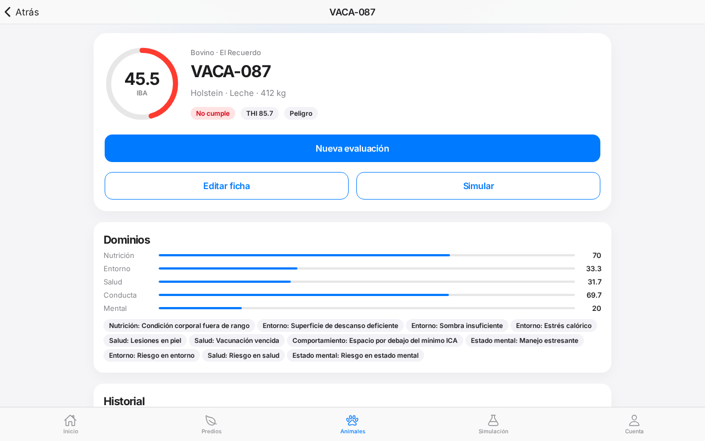

Bienestar ICA
Monitoreo y simulación · UCC
¿Qué pasa si cambio la dieta mañana… sin tocar todavía al animal?
Prototipo publicado para monitorear bovinos y caprinos con el índice de bienestar ICA y proyectar peso e IBA bajo estrés ambiental o nutricional — antes de intervenir el lote.
Caso en producción
VACA-087 · El Recuerdo
45,5
IBA actual · No cumple · THI 85,7 · prioridad del tablero
El hueco que cierra
El cumplimiento ICA suele vivir en planillas o en criterio suelto. Falta un índice interpretable y una forma de ensayar decisiones.
Sin simular
Se interviene a ciegas y se mide después.
Con Bienestar ICA
Se proyecta peso e IBA in silico y luego se decide.
Producto vivo, no mockup



01
Índice IBA
Nutrición, entorno, salud, conducta y estado mental. Semáforo ≥80 / ≥60.
02
THI
Estrés calórico por especie con el índice temperatura-humedad (Thom).
03
Eventos discretos
Un snapshot por día. Determinista. Sequía vs mejora de instalaciones.
Evidencia de la campaña
Suite automatizada contra el despliegue en Vercel. Defectos de logout, cabeceras y credenciales demo cerrados en código.
7/7suites
17/17E2E
81,4IBA medio
Acalidad
Por qué destaca
- No es solo inventario: proyecta el futuro del animal.
- Reglas ICA auditables, no una caja negra de “IA”.
- Roles, aislamiento por predio y app publicada.
- Bovino / caprino / porcino en un mismo flujo operativo.
Probar ahora
animal-welfare-platform-vepq.vercel.app